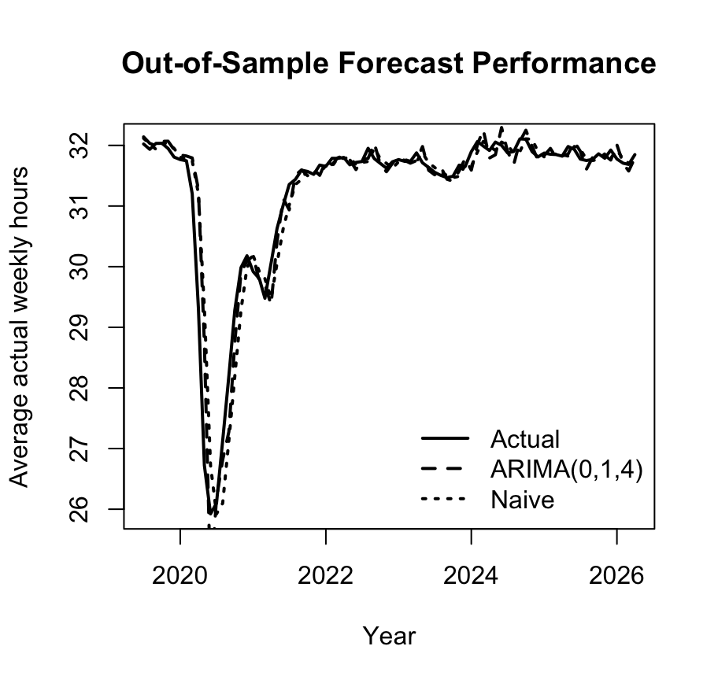

← All projects
MSC DATA SCIENCE · CASE STUDY 01
UK working-hours forecasting
Compared ARIMA and naïve forecasts across 408 ONS time-series observations, using three non-overlapping datasets to examine the effect of dataset structure.
Context
Explore UK working-hours patterns and investigate how different non-overlapping data structures affect time-series forecasting.
What I worked on
- Worked with 408 observations from the Office for National Statistics (ONS).
- Created three non-overlapping datasets for comparison.
- Compared ARIMA models with naïve forecasting approaches.
- Assessed the effect of data structure on the forecasting results.
Outcome
Completed as an MSc Data Science dissertation, including the dissertation and defence. Model outputs and the academic report are not included in this starter repository.

Public portfolio note
The original R scripts, June 2026 ONS workbooks, model tables and selected charts are published in this portfolio's GitHub repository. An independent end-to-end R execution test is still outstanding.
The original R scripts, June 2026 ONS workbooks, model tables and selected charts are published in this portfolio's GitHub repository. An independent end-to-end R execution test is still outstanding.